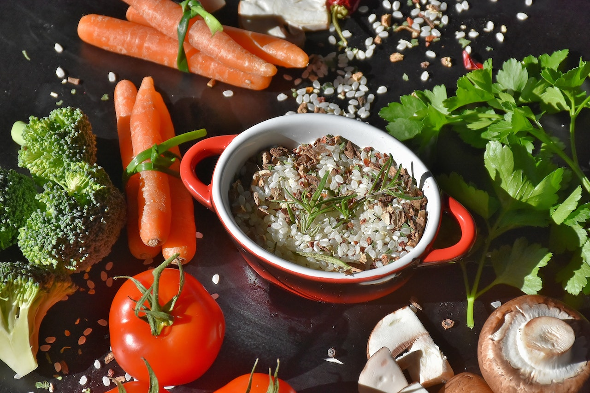

1,200-Calorie Weight Loss Meal Plan
This simple week-long meal plan is easy to follow and packed with delicious recipes.
1-Week Healthy and Balanced Meal Plan Ideas: Recipes
Day 1: Breakfast
Combine 3/4 cup bran flakes, 1 banana and 1 cup fat-free milk in a bowl.
Day 1: Lunch
Build a pita sandwich with 1 mini whole wheat pita, 3 ounces turkey breast, 1/2 roasted pepper, 1 teaspoon mayo, mustard and lettuce. Serve with 1 stick part-skim mozzarella string cheese and 2 kiwis.
Day 1: Dinner
Serve 4 ounces broiled flounder or sole with 2 sliced plum tomatoes sprinkled with 2 tablespoons grated Parmesan cheese, broiled until just golden. Eat with 1 cup cooked couscous and 1 cup steamed broccoli.
Day 2: Breakfast
Blend 1 cup frozen berries, 1/2 banana, and 8 ounces of low- or fat-free milk into a smoothie. Grab 1 or 2 hard-boiled eggs on your way out the door.
Day 2: Lunch
Heat up 1 cup vegetarian vegetable soup and serve with 1 veggie burger on a slice of whole grain and seed toast or an English muffin. Pair with 1 cup of fresh grapes.
Day 2: Dinner
Brush 4 ounces boneless, skinless chicken breast with barbecue sauce and grill. Garnish chicken with chopped scallions and a squeeze of lime juice. Combine 2 heaping cups of sautéed spinach with garlic, olive oil and tomatoes and serve with 1/2 plain baked or sweet potato.
Day 3: Breakfast
In the microwave, cook 1/2 cup quick-cooking oats with low-fat or unsweetened soy milk. Add 1 strawberry (sliced), 1 teaspoon honey and a pinch of cinnamon.
Day 3: Lunch
To make a chicken salad, toss 4 ounces shredded skinless roast chicken breast with 1/4 cup sliced red grapes, 1 tablespoon slivered almonds or nuts of choice, 1/4 cup chopped celery, 1 tablespoon mayonnaise and 1 tablespoon plain, unsweetened Greek yogurt. Serve over lettuce. Eat with 1 large piece of multigrain toast.
Day 3: Dinner
Serve 4 ounces steamed shrimp with 1 baked potato topped with 3 tablespoons salsa and 1 tablespoon unsweetened Greek yogurt, plus 3 cups spinach, steamed. Finish the meal off with 1 ounce of chocolate or a 100- to 150-calorie ice cream bar.
Day 4: Breakfast
Top 1 cup of plain or low-sugar Greek yogurt with 1 cup berries of choice and 1/3 cup low-sugar granola to make a simple but delectable yogurt parfait.
Day 4: Lunch
Heat 1 cup tomato soup and serve with a sandwich made with 1 mini whole-wheat pita, 3 ounces thinly sliced roast beef, 1 teaspoon horseradish, mustard, tomato slices and lettuce. Eat with 2 cups raw veggies and 1/4 cup of hummus.
Day 4: Dinner
Serve 4 ounces poached salmon with a slaw made by tossing 1 1/4 cups coleslaw mix and 2 sliced scallions with 1 tablespoon of rice vinegar and 1 1/2 teaspoons olive oil. Add spices, herbs and seasoning as desired. Pair with 1 cup of a 100% whole grain, like quinoa.
Day 5: Breakfast
Combine 1 cup Cheerios, 1/2 cup berries, 1 tablespoon slivered almonds and 6 ounces plain, unsweetened Greek yogurt in a bowl.

Day 5: Lunch
Make a quesadilla by spreading 1/4 cup fat-free refried beans over a 100% stone-ground corn tortilla. Sprinkle on 1 ounce shredded part-skim cheese. 45 seconds on high or grill. Serve with cucumber spears and 1/2 cup 2% cottage cheese or Greek yogurt topped with 2 clementines.

Day 5: Dinner
Serve 3 ounces roasted pork tenderloin with 1 cup baked acorn squash, mashed with a pinch of cinnamon; 2 to 3 cups salad greens with a dash of olive oil and as much vinegar as desired; and chocolate or a 100- to 150-calorie ice cream bar for dessert.
Day 6: Breakfast
Toast a 100% whole-grain frozen waffle and spread 2 tablespoons nut butter on top. Add 1 small sliced banana plus cinnamon and nutmeg. Serve with 8 ounces fat-free milk.
Day 6: Lunch
Make a tuna pita with one mini whole-wheat pita, 2 ounces water-packed tuna, 1 tablespoon mayonnaise, mustard, cucumber and onion slices. Serve with 10 baby carrots and 2/3 cup plain, unsweetened Greek yogurt with a small pear.
Day 6: Dinner
Make jambalaya by combining 3/4 cup cooked brown rice with 1/2 cup corn, 2 ounces cooked sliced turkey sausage, 1/3 cup salsa and 1/4 cup no-salt-added black or navy beans until heated through. Eat with 3 cups spinach sautéed with garlic in 1 tablespoon olive oil.
Day 7: Breakfast
Layer 1/2 toasted English muffin with 1 ounce reduced-fat sliced cheese, 1 sliced tomato sliced, 1 cup steamed and drained spinach and 1 poached egg. Serve with one grapefruit.

Day 7: Lunch
Make black bean salad by tossing 1/2 cup canned black beans, 1/2 cup orange slices, chopped red bell peppers, red onion, scallions and any other desired veggies with 1 teaspoon vinegar. Serve over salad greens and alongside one 100% stone ground corn tortilla and a piece of fruit.